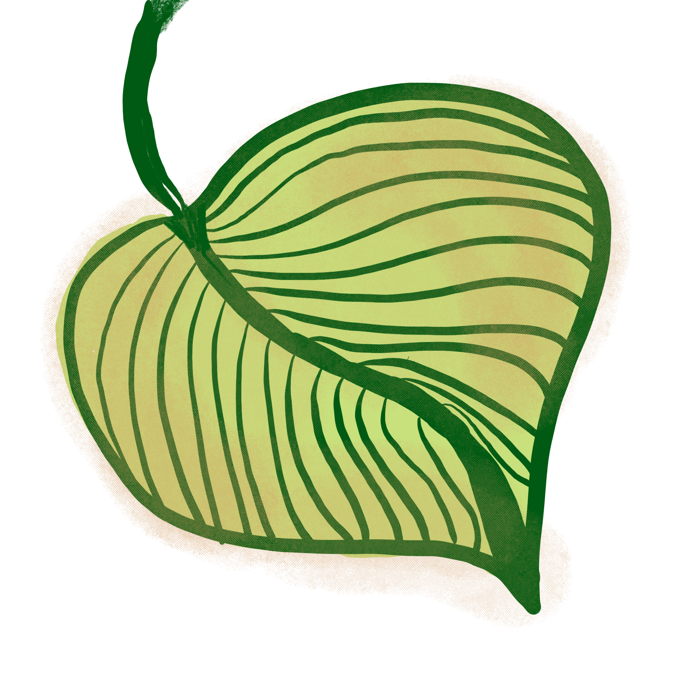
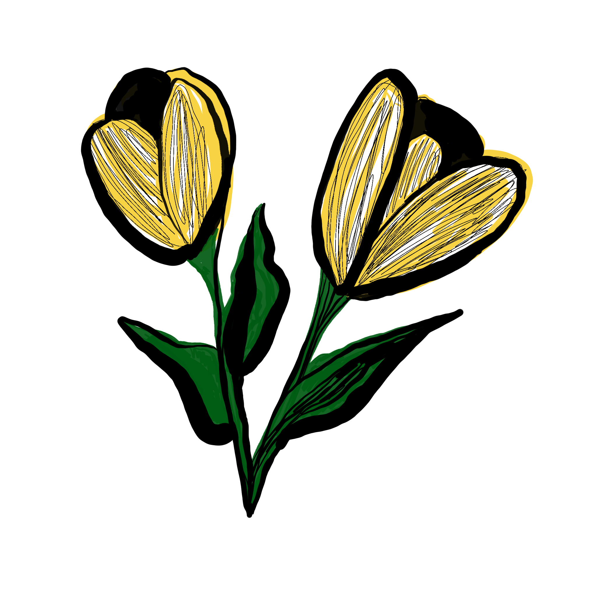
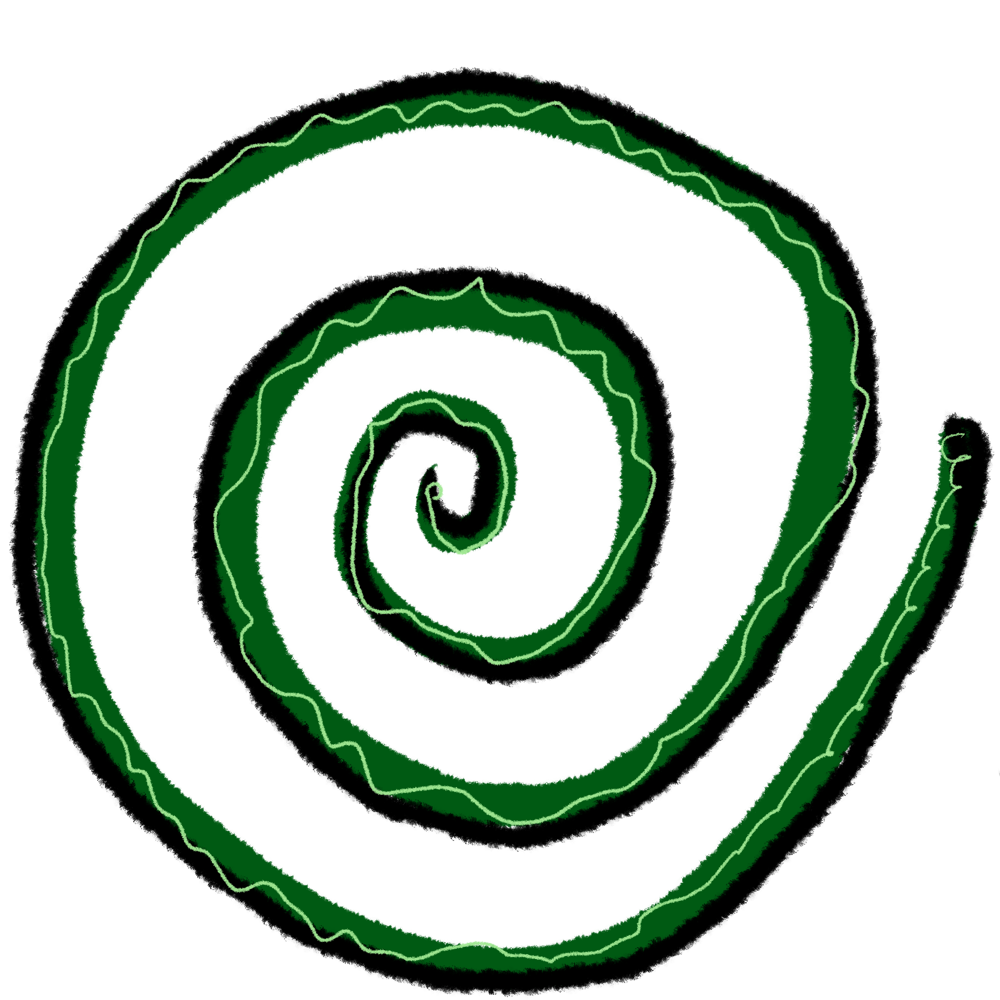

please, come in and stay awhile. this is a space for slow movement, meandering, pausing, zoning out, and zoning in. spiral time. i am collecting the things that fascinate me, delight me, intrigue me, the things i can't stop thinking about. i invite you to follow the threads and create your own. and, who knows? maybe the doodles below might lead you somewhere new and mysterious if you click...
|  |  |  | |